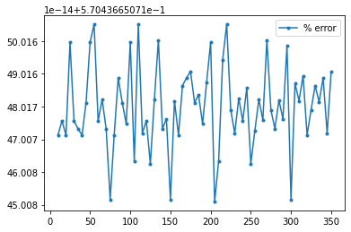

Contents
%load_ext autoreload
%autoreload 2
import numpy as np
import matplotlib.pyplot as plt
import pop_tools
import thermodyn
grid = pop_tools.get_grid('POP_gx1v6')
grid
/glade/work/mclong/miniconda3/envs/metabolic/lib/python3.7/site-packages/numba/np/ufunc/parallel.py:365: NumbaWarning: The TBB threading layer requires TBB version 2019.5 or later i.e., TBB_INTERFACE_VERSION >= 11005. Found TBB_INTERFACE_VERSION = 6103. The TBB threading layer is disabled.
warnings.warn(problem)
<xarray.Dataset>
Dimensions: (nlat: 384, nlon: 320, z_t: 60, z_w: 60, z_w_bot: 60, nreg: 14)
Coordinates:
* z_t (z_t) float64 500.0 1.5e+03 2.5e+03 ... 5.125e+05 5.375e+05
* z_w (z_w) float64 0.0 1e+03 2e+03 3e+03 ... 4.75e+05 5e+05 5.25e+05
* z_w_bot (z_w_bot) float64 1e+03 2e+03 3e+03 ... 5e+05 5.25e+05 5.5e+05
* nreg (nreg) int64 0 1 2 3 4 5 6 7 8 9 10 11 12 13
Dimensions without coordinates: nlat, nlon
Data variables: (12/15)
TLAT (nlat, nlon) float64 -79.22 -79.22 -79.22 ... 72.2 72.19 72.19
TLONG (nlat, nlon) float64 320.6 321.7 322.8 ... 318.9 319.4 319.8
ULAT (nlat, nlon) float64 -78.95 -78.95 -78.95 ... 72.42 72.41 72.41
ULONG (nlat, nlon) float64 321.1 322.3 323.4 ... 319.2 319.6 320.0
DXT (nlat, nlon) float64 1.894e+06 1.893e+06 ... 1.473e+06
DYT (nlat, nlon) float64 5.94e+06 5.94e+06 ... 5.046e+06 5.046e+06
... ...
UAREA (nlat, nlon) float64 1.423e+13 1.423e+13 ... 7.639e+12
KMT (nlat, nlon) int32 0 0 0 0 0 0 0 0 0 0 ... 0 0 0 0 0 0 0 0 0 0
REGION_MASK (nlat, nlon) int32 0 0 0 0 0 0 0 0 0 0 ... 0 0 0 0 0 0 0 0 0 0
dz (z_t) float64 1e+03 1e+03 1e+03 ... 2.499e+04 2.5e+04 2.5e+04
region_name (nreg) <U21 'Caspian Sea' 'Black Sea' ... 'Hudson Bay'
region_val (nreg) int64 -14 -13 -12 -5 1 2 3 4 6 7 8 9 10 11
Attributes:
lateral_dims: [384, 320]
vertical_dims: 60
vert_grid_file: gx1v7_vert_grid
horiz_grid_fname: inputdata/ocn/pop/gx1v6/grid/horiz_grid_20010402.ieeer8
topography_fname: inputdata/ocn/pop/gx1v6/grid/topography_20090204.ieeei4
region_mask_fname: inputdata/ocn/pop/gx1v6/grid/region_mask_20090205.ieeei4
type: dipole
title: POP_gx1v6 gridxarray.Dataset
- nlat: 384
- nlon: 320
- z_t: 60
- z_w: 60
- z_w_bot: 60
- nreg: 14
- z_t(z_t)float64500.0 1.5e+03 ... 5.375e+05
- units :
- cm
- long_name :
- depth from surface to midpoint of layer
- positive :
- down
array([5.000000e+02, 1.500000e+03, 2.500000e+03, 3.500000e+03, 4.500000e+03, 5.500000e+03, 6.500000e+03, 7.500000e+03, 8.500000e+03, 9.500000e+03, 1.050000e+04, 1.150000e+04, 1.250000e+04, 1.350000e+04, 1.450000e+04, 1.550000e+04, 1.650984e+04, 1.754790e+04, 1.862913e+04, 1.976603e+04, 2.097114e+04, 2.225783e+04, 2.364088e+04, 2.513702e+04, 2.676542e+04, 2.854837e+04, 3.051192e+04, 3.268680e+04, 3.510935e+04, 3.782276e+04, 4.087847e+04, 4.433777e+04, 4.827367e+04, 5.277280e+04, 5.793729e+04, 6.388626e+04, 7.075633e+04, 7.870025e+04, 8.788252e+04, 9.847059e+04, 1.106204e+05, 1.244567e+05, 1.400497e+05, 1.573946e+05, 1.764003e+05, 1.968944e+05, 2.186457e+05, 2.413972e+05, 2.649001e+05, 2.889385e+05, 3.133405e+05, 3.379794e+05, 3.627670e+05, 3.876452e+05, 4.125768e+05, 4.375393e+05, 4.625190e+05, 4.875083e+05, 5.125028e+05, 5.375000e+05]) - z_w(z_w)float640.0 1e+03 2e+03 ... 5e+05 5.25e+05
- units :
- cm
- positive :
- down
- long_name :
- depth from surface to top of layer
array([ 0. , 1000. , 2000. , 3000. , 4000. , 5000. , 6000. , 7000. , 8000. , 9000. , 10000. , 11000. , 12000. , 13000. , 14000. , 15000. , 16000. , 17019.6808, 18076.1292, 19182.1243, 20349.9313, 21592.3446, 22923.3124, 24358.4534, 25915.5793, 27615.2589, 29481.4713, 31542.3736, 33831.2257, 36387.4728, 39258.0478, 42498.885 , 46176.6575, 50370.6883, 55174.9119, 60699.6663, 67072.8582, 74439.803 , 82960.6956, 92804.3538, 104136.8196, 117104.0188, 131809.3626, 148290.0716, 166499.2064, 186301.4408, 207487.3978, 229803.9076, 252990.4017, 276809.8509, 301067.0677, 325613.847 , 350344.8607, 375189.1888, 400101.1634, 425052.4544, 450026.0482, 475012.0091, 500004.6829, 525000.927 ]) - z_w_bot(z_w_bot)float641e+03 2e+03 ... 5.25e+05 5.5e+05
- units :
- cm
- positive :
- down
- long_name :
- depth from surface to bottom of layer
array([ 1000. , 2000. , 3000. , 4000. , 5000. , 6000. , 7000. , 8000. , 9000. , 10000. , 11000. , 12000. , 13000. , 14000. , 15000. , 16000. , 17019.6808, 18076.1292, 19182.1243, 20349.9313, 21592.3446, 22923.3124, 24358.4534, 25915.5793, 27615.2589, 29481.4713, 31542.3736, 33831.2257, 36387.4728, 39258.0478, 42498.885 , 46176.6575, 50370.6883, 55174.9119, 60699.6663, 67072.8582, 74439.803 , 82960.6956, 92804.3538, 104136.8196, 117104.0188, 131809.3626, 148290.0716, 166499.2064, 186301.4408, 207487.3978, 229803.9076, 252990.4017, 276809.8509, 301067.0677, 325613.847 , 350344.8607, 375189.1888, 400101.1634, 425052.4544, 450026.0482, 475012.0091, 500004.6829, 525000.927 , 549999.0364]) - nreg(nreg)int640 1 2 3 4 5 6 7 8 9 10 11 12 13
array([ 0, 1, 2, 3, 4, 5, 6, 7, 8, 9, 10, 11, 12, 13])
- TLAT(nlat, nlon)float64-79.22 -79.22 ... 72.19 72.19
- units :
- degrees_north
- long_name :
- T-grid latitude
array([[-79.22052261, -79.22052261, -79.22052261, ..., -79.22052261, -79.22052261, -79.22052261], [-78.68630626, -78.68630626, -78.68630626, ..., -78.68630626, -78.68630626, -78.68630626], [-78.15208992, -78.15208992, -78.15208992, ..., -78.15208992, -78.15208992, -78.15208992], ..., [ 71.29031715, 71.29408252, 71.30160692, ..., 71.30160692, 71.29408252, 71.29031716], [ 71.73524335, 71.73881845, 71.74596231, ..., 71.74596231, 71.73881845, 71.73524335], [ 72.18597561, 72.18933231, 72.19603941, ..., 72.19603941, 72.18933231, 72.18597562]]) - TLONG(nlat, nlon)float64320.6 321.7 322.8 ... 319.4 319.8
- units :
- degrees_east
- long_name :
- T-grid longitude
array([[320.56250892, 321.68750895, 322.81250898, ..., 317.18750883, 318.31250886, 319.43750889], [320.56250892, 321.68750895, 322.81250898, ..., 317.18750883, 318.31250886, 319.43750889], [320.56250892, 321.68750895, 322.81250898, ..., 317.18750883, 318.31250886, 319.43750889], ..., [320.25133086, 320.75380113, 321.25577325, ..., 318.74424456, 319.24621668, 319.74869143], [320.23459477, 320.70358949, 321.17207442, ..., 318.82794339, 319.29642832, 319.76542721], [320.21650899, 320.6493303 , 321.08163473, ..., 318.91838308, 319.3506875 , 319.78351267]]) - ULAT(nlat, nlon)float64-78.95 -78.95 ... 72.41 72.41
- units :
- degrees_north
- long_name :
- U-grid latitude
array([[-78.95289509, -78.95289509, -78.95289509, ..., -78.95289509, -78.95289509, -78.95289509], [-78.41865507, -78.41865507, -78.41865507, ..., -78.41865507, -78.41865507, -78.41865507], [-77.88441506, -77.88441506, -77.88441506, ..., -77.88441506, -77.88441506, -77.88441506], ..., [ 71.51215224, 71.51766482, 71.52684191, ..., 71.51766482, 71.51215224, 71.51031365], [ 71.95983548, 71.96504258, 71.97371054, ..., 71.96504258, 71.95983548, 71.95809872], [ 72.4135549 , 72.41841155, 72.42649554, ..., 72.41841155, 72.4135549 , 72.41193498]]) - ULONG(nlat, nlon)float64321.1 322.3 323.4 ... 319.6 320.0
- units :
- degrees_east
- long_name :
- U-grid longitude
array([[321.12500894, 322.25000897, 323.375009 , ..., 317.75000884, 318.87500887, 320.0000089 ], [321.12500894, 322.25000897, 323.375009 , ..., 317.75000884, 318.87500887, 320.0000089 ], [321.12500894, 322.25000897, 323.375009 , ..., 317.75000884, 318.87500887, 320.0000089 ], ..., [320.48637802, 320.97240884, 321.4577638 , ..., 319.02760897, 319.51363979, 320.00001324], [320.45160767, 320.90286181, 321.35342745, ..., 319.097156 , 319.54841014, 320.00001293], [320.41397858, 320.82760085, 321.24052915, ..., 319.17241696, 319.58603923, 320.00001259]]) - DXT(nlat, nlon)float641.894e+06 1.893e+06 ... 1.473e+06
- units :
- cm
- long_name :
- x-spacing centered at T points
- coordinates :
- TLONG TLAT
array([[1893724.16734842, 1893489.06047211, 1893007.05572959, ..., 1893007.05572959, 1893489.06047211, 1893724.16734842], [2453808.06658755, 2453808.06658755, 2453808.06658755, ..., 2453808.06658755, 2453808.06658755, 2453808.06658755], [2568054.75706075, 2568054.75706075, 2568054.75706075, ..., 2568054.75706075, 2568054.75706075, 2568054.75706075], ..., [1792815.11513785, 1792270.53086782, 1791150.69791216, ..., 1791150.69791216, 1792270.53086782, 1792815.11513785], [1635014.87507127, 1634497.02506524, 1633433.44903024, ..., 1633433.44903024, 1634497.02506524, 1635014.87507127], [1472954.03210867, 1472467.18486634, 1471468.46623378, ..., 1471468.46623378, 1472467.18486634, 1472954.03210867]]) - DYT(nlat, nlon)float645.94e+06 5.94e+06 ... 5.046e+06
- units :
- cm
- long_name :
- y-spacing centered at T points
- coordinates :
- TLONG TLAT
array([[5939545.50164216, 5939545.50164216, 5939545.50164216, ..., 5939545.50164216, 5939545.50164216, 5939545.50164216], [5939545.50164216, 5939545.50164216, 5939545.50164216, ..., 5939545.50164216, 5939545.50164216, 5939545.50164216], [5939545.50164216, 5939545.50164216, 5939545.50164216, ..., 5939545.50164216, 5939545.50164216, 5939545.50164216], ..., [4916574.84890538, 4917288.98384521, 4918715.63970048, ..., 4918715.63970048, 4917288.98384521, 4916574.84890538], [4978532.2566533 , 4979215.61944315, 4980580.74758446, ..., 4980580.74758446, 4979215.61944315, 4978532.2566533 ], [5045798.85436364, 5046446.74588877, 5047740.96078377, ..., 5047740.96078377, 5046446.74588877, 5045798.85436364]]) - DXU(nlat, nlon)float642.397e+06 2.397e+06 ... 1.391e+06
- units :
- cm
- long_name :
- x-spacing centered at U points
- coordinates :
- ULONG ULAT
array([[2396630.14446974, 2396630.14446974, 2396630.14446974, ..., 2396630.14446974, 2396630.14446974, 2396630.14446974], [2510985.98870535, 2510985.98870535, 2510985.98870535, ..., 2510985.98870535, 2510985.98870535, 2510985.98870535], [2625123.52541615, 2625123.52541615, 2625123.52541615, ..., 2625123.52541615, 2625123.52541615, 2625123.52541615], ..., [1714673.76651229, 1713860.79472732, 1712495.20914674, ..., 1713860.79472732, 1714673.76651229, 1714939.8761523 ], [1554838.13362422, 1554069.67936816, 1552779.42960208, ..., 1554069.67936816, 1554838.13362422, 1555089.87399024], [1390583.0833508 , 1389865.97173196, 1388662.44323673, ..., 1389865.97173196, 1390583.0833508 , 1390818.1902271 ]]) - DYU(nlat, nlon)float645.94e+06 5.94e+06 ... 5.493e+06
- units :
- cm
- long_name :
- y-spacing centered at U points
- coordinates :
- ULONG ULAT
array([[5939545.50164216, 5939545.50164216, 5939545.50164216, ..., 5939545.50164216, 5939545.50164216, 5939545.50164216], [5939545.50164216, 5939545.50164216, 5939545.50164216, ..., 5939545.50164216, 5939545.50164216, 5939545.50164216], [5939545.50164216, 5939545.50164216, 5939545.50164216, ..., 5939545.50164216, 5939545.50164216, 5939545.50164216], ..., [4947728.34045104, 4948776.26283732, 4950520.12444762, ..., 4948776.26283732, 4947728.34045104, 4947378.76510764], [5012332.0613836 , 5013330.30394832, 5014991.40441991, ..., 5013330.30394832, 5012332.0613836 , 5011999.04963334], [5492753.21352024, 5493239.03401069, 5494047.42841524, ..., 5493239.03401069, 5492753.21352024, 5492591.14248556]]) - TAREA(nlat, nlon)float641.125e+13 1.125e+13 ... 7.432e+12
- units :
- cm^2
- long_name :
- area of T cells
- coordinates :
- TLONG TLAT
array([[1.12478609e+13, 1.12464644e+13, 1.12436015e+13, ..., 1.12436015e+13, 1.12464644e+13, 1.12478609e+13], [1.45745047e+13, 1.45745047e+13, 1.45745047e+13, ..., 1.45745047e+13, 1.45745047e+13, 1.45745047e+13], [1.52530781e+13, 1.52530781e+13, 1.52530781e+13, ..., 1.52530781e+13, 1.52530781e+13, 1.52530781e+13], ..., [8.81450970e+12, 8.81311214e+12, 8.81016095e+12, ..., 8.81016095e+12, 8.81311214e+12, 8.81450970e+12], [8.13997430e+12, 8.13851312e+12, 8.13544719e+12, ..., 8.13544719e+12, 8.13851312e+12, 8.13997430e+12], [7.43222977e+12, 7.43072723e+12, 7.42759165e+12, ..., 7.42759165e+12, 7.43072723e+12, 7.43222977e+12]]) - UAREA(nlat, nlon)float641.423e+13 1.423e+13 ... 7.639e+12
- units :
- cm^2
- long_name :
- area of U cells
- coordinates :
- ULONG ULAT
array([[1.42348938e+13, 1.42348938e+13, 1.42348938e+13, ..., 1.42348938e+13, 1.42348938e+13, 1.42348938e+13], [1.49141155e+13, 1.49141155e+13, 1.49141155e+13, ..., 1.49141155e+13, 1.49141155e+13, 1.49141155e+13], [1.55920406e+13, 1.55920406e+13, 1.55920406e+13, ..., 1.55920406e+13, 1.55920406e+13, 1.55920406e+13], ..., [8.48373999e+12, 8.48151362e+12, 8.47774200e+12, ..., 8.48151362e+12, 8.48373999e+12, 8.48445713e+12], [7.79336503e+12, 7.79106462e+12, 7.78717549e+12, ..., 7.79106462e+12, 7.79336503e+12, 7.79410897e+12], [7.63812970e+12, 7.63486601e+12, 7.62937733e+12, ..., 7.63486601e+12, 7.63812970e+12, 7.63919567e+12]]) - KMT(nlat, nlon)int320 0 0 0 0 0 0 0 ... 0 0 0 0 0 0 0 0
- long_name :
- k Index of Deepest Grid Cell on T Grid
- coordinates :
- TLONG TLAT
array([[ 0, 0, 0, ..., 0, 0, 0], [ 0, 0, 0, ..., 0, 0, 0], [38, 38, 38, ..., 0, 0, 0], ..., [ 0, 0, 0, ..., 0, 0, 0], [ 0, 0, 0, ..., 0, 0, 0], [ 0, 0, 0, ..., 0, 0, 0]], dtype=int32) - REGION_MASK(nlat, nlon)int320 0 0 0 0 0 0 0 ... 0 0 0 0 0 0 0 0
- long_name :
- basin index number (signed integers)
- coordinates :
- TLONG TLAT
array([[0, 0, 0, ..., 0, 0, 0], [0, 0, 0, ..., 0, 0, 0], [1, 1, 1, ..., 0, 0, 0], ..., [0, 0, 0, ..., 0, 0, 0], [0, 0, 0, ..., 0, 0, 0], [0, 0, 0, ..., 0, 0, 0]], dtype=int32) - dz(z_t)float641e+03 1e+03 ... 2.5e+04 2.5e+04
- units :
- cm
- long_name :
- thickness of layer k
array([ 1000. , 1000. , 1000. , 1000. , 1000. , 1000. , 1000. , 1000. , 1000. , 1000. , 1000. , 1000. , 1000. , 1000. , 1000. , 1000. , 1019.6808, 1056.4484, 1105.9951, 1167.807 , 1242.4133, 1330.9678, 1435.141 , 1557.1259, 1699.6796, 1866.2124, 2060.9023, 2288.8521, 2556.2471, 2870.575 , 3240.8372, 3677.7725, 4194.0308, 4804.2236, 5524.7544, 6373.1919, 7366.9448, 8520.8926, 9843.6582, 11332.4658, 12967.1992, 14705.3438, 16480.709 , 18209.1348, 19802.2344, 21185.957 , 22316.5098, 23186.4941, 23819.4492, 24257.2168, 24546.7793, 24731.0137, 24844.3281, 24911.9746, 24951.291 , 24973.5938, 24985.9609, 24992.6738, 24996.2441, 24998.1094]) - region_name(nreg)<U21'Caspian Sea' ... 'Hudson Bay'
array(['Caspian Sea', 'Black Sea', 'Baltic Sea', 'Red Sea', 'Southern Ocean', 'Pacific Ocean', 'Indian Ocean', 'Persian Gulf', 'Atlantic Ocean', 'Mediterranean Sea', 'Lab. Sea & Baffin Bay', 'GIN Seas', 'Arctic Ocean', 'Hudson Bay'], dtype='<U21') - region_val(nreg)int64-14 -13 -12 -5 1 2 ... 7 8 9 10 11
- coordinate :
- region_name
array([-14, -13, -12, -5, 1, 2, 3, 4, 6, 7, 8, 9, 10, 11])
- lateral_dims :
- [384, 320]
- vertical_dims :
- 60
- vert_grid_file :
- gx1v7_vert_grid
- horiz_grid_fname :
- inputdata/ocn/pop/gx1v6/grid/horiz_grid_20010402.ieeer8
- topography_fname :
- inputdata/ocn/pop/gx1v6/grid/topography_20090204.ieeei4
- region_mask_fname :
- inputdata/ocn/pop/gx1v6/grid/region_mask_20090205.ieeei4
- type :
- dipole
- title :
- POP_gx1v6 grid
O2 = np.arange(10., 355, 5.)
T = 10.
S = 34.7
k = 40
Z = grid.z_t[k] * 1e-2
check = []
new = []
for o2 in O2:
check.append(
thermodyn.compute_pO2(o2, T, S, Z)
)
new.append(
thermodyn.compute_pO2(o2, T, S, grid.z_t.data[k]*1e-2, isPOP=True)
)
check = np.array(check)
new = np.array(new)
plt.plot(O2, 100.*(new - check)/check, '.-', label="% error");
plt.legend();
assert (100.*(new - check)/check < 1.).all()
